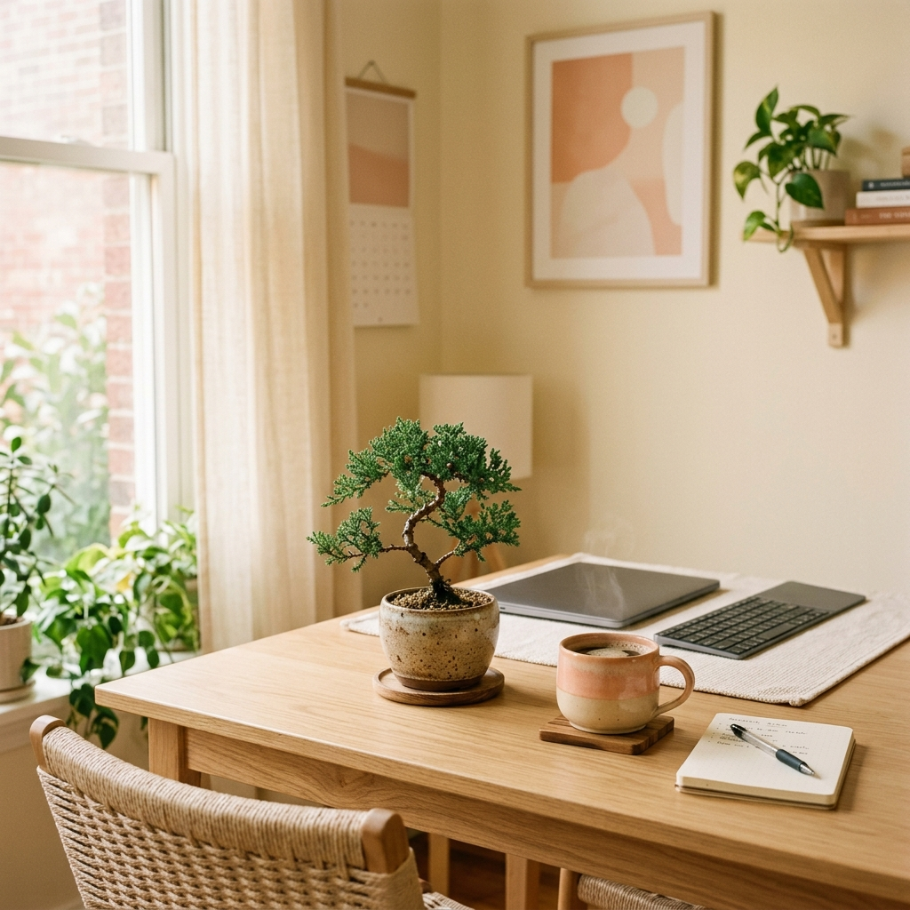

Featured Projects

⭐ Featured
Jarvis — AI Assistant
An intelligent assistant interface with a futuristic UI, voice interactions, and smooth animations. Inspired by Iron Man's Jarvis.

🧘 Wellness
Calm and Focus
A serene web experience designed to help you relax, meditate, and concentrate. Features ambient sounds and calming visuals.

⏰ Utility
Clock
A sleek, modern digital clock with beautiful typography, smooth second-hand animations, and a minimalist aesthetic.